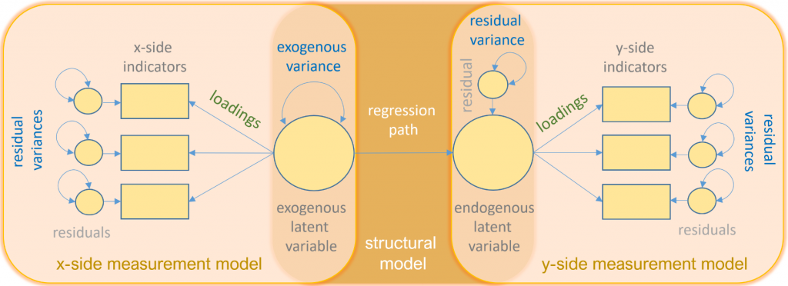

Course #1 - Introduction to SEM
Introduction to SEM
Purpose
This seminar introduces basic concepts of structural equation modeling (SEM) using lavaan in the R programming language. The emphasis is on identifying various manifestations of SEM models and interpreting the output..
Fundamental topics covered include:
- Matrix notation
- Identification
- Model fit
- Various kind of models…
Assumption: All variables are continuous and normally distributed.
Introduction
What’s SEM?
Structural equation modeling (SEM) is a linear model framework that models both simultaneous regression equations with latent variables.
Special cases of SEM:
- linear regression
- multivariate regression
- path analysis
- confirmatory factor analysis
- structural regression
What can we do in SEM?
Using SEM, one can model the following relationships
- observed to observed variables (e.g., regression)
- latent to observed variables (e.g., confirmatory factor analysis)
- latent to latent variables (e.g., structural regressoins)
We can fit measurement (relating observed to latent variables) models and structural (relating latent to latent variables) models
Let’s get started
Now let’s install lavaan
Let’s import data
X cluster_id age_sd Bout_t1 Psysa_t1 Recov_t1 Detach_t1 bout_1_t1 bout_2_t1
1 1 1 8.348367 3.50 4.00 2.00 2.75 2 4
2 2 1 8.348367 2.75 4.75 3.50 3.00 2 4
3 3 1 8.348367 3.75 3.25 3.25 3.50 4 4
4 4 1 8.348367 3.00 3.50 2.00 2.75 3 4
5 5 1 8.348367 2.75 3.50 3.75 2.75 2 3
6 6 1 8.348367 2.00 4.00 4.00 4.00 2 2
bout_3_t1 bout_4_t1 psysa_1_t1 psysa_2_t1 psysa_3_t1 psysa_4_t1 recov_1_t1
1 4 4 4 4 4 4 2
2 3 2 5 5 5 4 4
3 4 3 3 3 4 3 4
4 2 3 4 3 4 3 2
5 4 2 4 3 4 3 4
6 2 2 4 4 4 4 4
recov_2_t1 recov_3_t1 recov_4_t1 age_t1 sex_t1 QID_t1
1 2 2 2 59 2 554514
2 4 3 3 48 2 562190
3 3 3 3 38 2 555573
4 2 2 2 33 2 554953
5 3 4 4 37 2 564215
6 4 4 4 45 2 554701The Variance-Covariance Matrix
The most essential component of a structural equation model is covariance between items. We can view the true population covariance within observed variables in the variance-covariance matrix which we shall call \(\Sigma\). As we cannot observe the true variance-covariance matrix, we have to estimate it with our sample and call it \(\hat{\Sigma} = S\), the sample variance-covariance matrix. In R, we can use the function cov() for it.
The Variance-Covariance Matrix
Let’s observe the variance-covariance matrix for four burnout and psychological safety items.
cluster_id age_sd Bout_t1 Psysa_t1 Recov_t1
cluster_id 480.2262029 7.413000965 -1.28856014 -0.22154049 0.586251667
age_sd 7.4130010 2.978378700 0.02696889 -0.06646027 0.005410095
Bout_t1 -1.2885601 0.026968894 0.64320164 -0.08331102 -0.361803964
Psysa_t1 -0.2215405 -0.066460271 -0.08331102 0.28943686 0.074675926
Recov_t1 0.5862517 0.005410095 -0.36180396 0.07467593 0.654742619
Detach_t1 0.4644689 -0.052529690 -0.19932015 0.05222059 0.238698844
Detach_t1
cluster_id 0.46446892
age_sd -0.05252969
Bout_t1 -0.19932015
Psysa_t1 0.05222059
Recov_t1 0.23869884
Detach_t1 0.55524849Using the sample variance-covariance, we can see how observed variables are connected to one another. The matrix is symmetric and should not be confused with the model-implied covariance matrix \(\Sigma(\theta)\).
The sole purpose of any kind of SEM is to reproduce \(\Sigma\) as accurately as possible using a set of parameters \(\theta\), so that \(\Sigma = \Sigma(\theta)\).
Definitions
Let’s clear up some key words
- observed variable: a variable that exists in the data
- latent variable: a variable that is constructed and does not exist in the data
- exogenous variable: an independent variable either observed (x) or latent (\(\xi\)) that explains an endogenous variable
- endogenous variable: a dependent variable, either observed (y) or latent (\(\eta\)) that has a explanatory path leading to it
- measurement model: a model that links observed variables with latent variables
- indicator: an observed variable in a measurement model (can be exogenous or endogenous)
- factor: a latent variable defined by its indicators (can be exogenous or endogenous)
Definitions
- loading: a path between an indicator and a factor
- structural model: a model that specifies causal relationships among exogenous variables to endogenous variables (can be observed or latent)
- regression path: a path between exogenous and endogenous variables (can be observed or latent)
Path diagrams
Strange Greek math symbols and matrix equations are scary. Also, only nerds can pronounce, let alone understand this kind of notation. That’s why we additionally provide path diagrams.

Path diagram symbols
Path diagrams
Here, we see a regression of a factor (latent) on an item (observed). The right image depicts the variance of the factor.

Path diagram examples
Path diagrams
Now let’s have a look at all the possible symbols that we can encounter in path diagrams.
More examples
Basic lavaan syntax
Let’s have a look at lavaan’s basic syntax:
- ~ predict, used for regression of observed outcome to observed predictors (e.g., y ~ x)
- =~ indicator, used for latent variable to observed indicator in factor analysis measurement models (e.g., f =~ q + r + s)
- ~~ covariance (e.g., x ~~ x)
- ~1 intercept or mean (e.g., x ~ 1 estimates the mean of variable x)
- 1* fixes parameter or loading to one (e.g., f =~ 1*q)
- NA* frees parameter or loading (useful to override default marker method, (e.g., f =~ NA*q)
- a* labels the parameter ‘a’, used for model constraints (e.g., f =~ a*q)
Regression and Path Analysis
Simple Regression
You will most likely know this equation:
\(y_1 = b_0 + b_1 x_1 + \epsilon_1\)
Here, \(b_0\) is the intercept, \(b_1\) is the coefficient and \(x_1\) is the observed predictor while \(\epsilon_1\) is the residual. However, in SEM one often finds the LISREL notation, which reads as follows:
\(y_1 = \alpha + \gamma x_1 + \zeta_1\)
Simple regression
\(y_1 = \alpha + \gamma x_1 + \zeta_1\)

Visual representation of the matrix
Simple regression
The standard way to run a linear regression in R is the lm() function from base R.
Call:
lm(formula = Bout_t1 ~ Psysa_t1, data = df)
Residuals:
Min 1Q Median 3Q Max
-2.14914 -0.57346 -0.03934 0.53262 2.28262
Coefficients:
Estimate Std. Error t value Pr(>|t|)
(Intercept) 3.86873 0.18982 20.381 < 2e-16 ***
Psysa_t1 -0.28784 0.04889 -5.887 5.55e-09 ***
---
Signif. codes: 0 '***' 0.001 '**' 0.01 '*' 0.05 '.' 0.1 ' ' 1
Residual standard error: 0.7873 on 895 degrees of freedom
Multiple R-squared: 0.03728, Adjusted R-squared: 0.03621
F-statistic: 34.66 on 1 and 895 DF, p-value: 5.549e-09Simple regression in lavaan
Now we estimate the same regression in lavaan(). Here, the intercept is not included by default so we have to add it.
m1b <- '
# regression
Bout_t1 ~ 1 + Psysa_t1
# Variance
Psysa_t1 ~~ Psysa_t1 # this is estimated by default in lavaan
'
fit1b <- sem(m1b, data=df)
summary(fit1b)lavaan 0.6-18 ended normally after 14 iterations
Estimator ML
Optimization method NLMINB
Number of model parameters 5
Number of observations 897
Model Test User Model:
Test statistic 0.000
Degrees of freedom 0
Parameter Estimates:
Standard errors Standard
Information Expected
Information saturated (h1) model Structured
Regressions:
Estimate Std.Err z-value P(>|z|)
Bout_t1 ~
Psysa_t1 -0.288 0.049 -5.894 0.000
Intercepts:
Estimate Std.Err z-value P(>|z|)
.Bout_t1 3.869 0.190 20.404 0.000
Psysa_t1 3.845 0.018 214.172 0.000
Variances:
Estimate Std.Err z-value P(>|z|)
Psysa_t1 0.289 0.014 21.178 0.000
.Bout_t1 0.619 0.029 21.178 0.000Simple regression in lavaan
Note that the “.” in front of bout_t1 denotes an endogenous variable.
The (exogenous) intercept and variance (\(\phi_{1}\)) should match the observed mean and variance.
Multiple Regression
In most cases, we are interested in more than one exogenous variable affectiong our outcome. Suppose we have one endogenous and two exogenous variable. Now let’s write that down in matrix form:
\(y_1 = \alpha_1 + \mathbf{x \gamma} + \zeta_1\)
- \(y_1\) is our endogenous variable aka outcome
- \(\alpha_1\) is the intercept of \(y_1\)
- \(\mathbf{x}\) is a vector of (\(1\) x \(q\)) exogenous variables
- \(\mathbf{\gamma}\) is a vector of (\(q\) x \(1\)) regression coefficients
- \(\zeta_1\) is the residual variance of \(y_1\)
Multiple Regression
Having this matrix, we assume two things:
\(y_1 = \alpha_1 + \mathbf{x \gamma} + \zeta_1\)
- \(E(\zeta) = 0\) (mean of the residuals is zero)
- \(cov(\zeta,\mathbf{x})=0\) (the residuals are uncorrelated with the exogenous variables)
Multiple Regression
Let’s model this visually:
Multiple Regression
Multiple Regression in lavaan
m2 <- '
# Regressions
Bout_t1 ~ 1 + Psysa_t1 + Recov_t1
# Covariance
Psysa_t1 ~~ Recov_t1
'
fit2 <- sem(m2,data=df)
summary(fit2)lavaan 0.6-18 ended normally after 22 iterations
Estimator ML
Optimization method NLMINB
Number of model parameters 9
Number of observations 897
Model Test User Model:
Test statistic 0.000
Degrees of freedom 0
Parameter Estimates:
Standard errors Standard
Information Expected
Information saturated (h1) model Structured
Regressions:
Estimate Std.Err z-value P(>|z|)
Bout_t1 ~
Psysa_t1 -0.150 0.042 -3.594 0.000
Recov_t1 -0.536 0.028 -19.341 0.000
Covariances:
Estimate Std.Err z-value P(>|z|)
Psysa_t1 ~~
Recov_t1 0.075 0.015 5.064 0.000
Intercepts:
Estimate Std.Err z-value P(>|z|)
.Bout_t1 5.217 0.174 30.007 0.000
Psysa_t1 3.845 0.018 214.172 0.000
Recov_t1 3.511 0.027 130.012 0.000
Variances:
Estimate Std.Err z-value P(>|z|)
.Bout_t1 0.436 0.021 21.178 0.000
Psysa_t1 0.289 0.014 21.178 0.000
Recov_t1 0.654 0.031 21.178 0.000Multivariate Regression
Up to now, we focused on having one outcome at a time (\(y_1\)). Moving to multivariate regression, we estimate more than one outcome at a time (\(y_1, y_2, ... , y_p\)) with \(p\) endogenous variables. Lets write that down in matrix notation:
\(\mathbf{y} = \mathbf{\alpha} + \mathbf{\Gamma} \mathbf{x} + \mathbf{\zeta}\)
Consider a case with two exogenous and two endogenous variables:
\(\begin{pmatrix} y_{1} \\ y_{2} \end{pmatrix} = \begin{pmatrix} \alpha_1 \\ \alpha_2 \end{pmatrix} + \begin{pmatrix} \gamma_{11} & \gamma_{12}\\ 0 & \gamma_{22} \end{pmatrix} \begin{pmatrix} x_1 \\ x_2 \end{pmatrix} + \begin{pmatrix} \zeta_{1}\\ \zeta_{2} \end{pmatrix}\)
- \(\mathbf{y} = (y_1, \cdots, y_p)’\) vector of \(p\) endogenous variables
- \(\mathbf{x}= (x_1, \cdots, x_q)’\) vector of \(q\) exogenous variables
- \(\alpha\) vector of \(p\) intercepts
- \(\mathbf{\Gamma}\) matrix of regression coefficients (\(p\) x \(q\)) linking the endogenous with the exogenous variables whose \(i\)-th row indicates the endogenous variable and \(j\)-th column indicates the exogenous variable
- \(\mathbf{\zeta}= ( \zeta_1, \cdots, \zeta_p)’\) vector of \(p\) residuals
Multivariate Regression
Let’s see a visual example of a multivariate regression:

Multivariate Regression
Let \(x_1\) be Psysa_t1, \(y_1\) be Bout_t1, \(x_2\) be Recov_t1 and \(y_2\) be Detach_t1. The parameters \(\phi_{11},\phi_{22},\phi_{12}\) represent the (co)variance in the exogenous variables, the parameters \(\zeta_1, \zeta_2\) refer to the residuals of \(y_1\) and \(y_2\), the parameters \(\psi_{11},\psi_{12}\) represent the residual variances in the endogenous variables.
Multivariate Regression
m3a <- '
# Regressions
Bout_t1 ~ 1 + Psysa_t1 + Detach_t1
Recov_t1 ~ 1 + Detach_t1
'
fit3a <- sem(m3a,data=df)
summary(fit3a)lavaan 0.6-18 ended normally after 18 iterations
Estimator ML
Optimization method NLMINB
Number of model parameters 8
Number of observations 897
Model Test User Model:
Test statistic 15.711
Degrees of freedom 1
P-value (Chi-square) 0.000
Parameter Estimates:
Standard errors Standard
Information Expected
Information saturated (h1) model Structured
Regressions:
Estimate Std.Err z-value P(>|z|)
Bout_t1 ~
Psysa_t1 -0.138 0.041 -3.357 0.001
Detach_t1 -0.346 0.034 -10.259 0.000
Recov_t1 ~
Detach_t1 0.430 0.033 12.912 0.000
Covariances:
Estimate Std.Err z-value P(>|z|)
.Bout_t1 ~~
.Recov_t1 -0.269 0.021 -13.047 0.000
Intercepts:
Estimate Std.Err z-value P(>|z|)
.Bout_t1 4.452 0.185 24.084 0.000
.Recov_t1 2.068 0.114 18.073 0.000
Variances:
Estimate Std.Err z-value P(>|z|)
.Bout_t1 0.559 0.026 21.178 0.000
.Recov_t1 0.552 0.026 21.178 0.000Multivariate Regression
Are these results the same that we would get with two separate OLS regressions? Let’s find out:
Call:
lm(formula = Bout_t1 ~ Psysa_t1 + Detach_t1, data = df)
Residuals:
Min 1Q Median 3Q Max
-2.52206 -0.51699 -0.04467 0.48301 2.35752
Coefficients:
Estimate Std. Error t value Pr(>|t|)
(Intercept) 4.76739 0.20133 23.680 < 2e-16 ***
Psysa_t1 -0.22692 0.04679 -4.849 1.46e-06 ***
Detach_t1 -0.33763 0.03379 -9.993 < 2e-16 ***
---
Signif. codes: 0 '***' 0.001 '**' 0.01 '*' 0.05 '.' 0.1 ' ' 1
Residual standard error: 0.7472 on 894 degrees of freedom
Multiple R-squared: 0.134, Adjusted R-squared: 0.1321
F-statistic: 69.18 on 2 and 894 DF, p-value: < 2.2e-16Multivariate Regression
Call:
lm(formula = Recov_t1 ~ Detach_t1, data = df)
Residuals:
Min 1Q Median 3Q Max
-2.78772 -0.46530 -0.00267 0.49733 2.07207
Coefficients:
Estimate Std. Error t value Pr(>|t|)
(Intercept) 2.06814 0.11456 18.05 <2e-16 ***
Detach_t1 0.42990 0.03333 12.90 <2e-16 ***
---
Signif. codes: 0 '***' 0.001 '**' 0.01 '*' 0.05 '.' 0.1 ' ' 1
Residual standard error: 0.7435 on 895 degrees of freedom
Multiple R-squared: 0.1567, Adjusted R-squared: 0.1558
F-statistic: 166.3 on 1 and 895 DF, p-value: < 2.2e-16Multivariate Regression
We observe a slight difference in coefficients. What could be the cause?
lavaan by default will covary residual variances of endogenous variables. Let’s override this default.

Multivariate Regression without covariance between residual variances
Multivariate Regression
Setting the covariance of the residual variables \(\psi_{12}\) to zero looks like this in lavaan:
m3d <- '
# Regressions
Bout_t1 ~ 1 + Psysa_t1 + Detach_t1
Recov_t1 ~ 1 + Detach_t1
# Covariance
Bout_t1 ~~ 0*Recov_t1
'
fit3d <- sem(m3d,data=df)
summary(fit3d)lavaan 0.6-18 ended normally after 1 iteration
Estimator ML
Optimization method NLMINB
Number of model parameters 7
Number of observations 897
Model Test User Model:
Test statistic 251.435
Degrees of freedom 2
P-value (Chi-square) 0.000
Parameter Estimates:
Standard errors Standard
Information Expected
Information saturated (h1) model Structured
Regressions:
Estimate Std.Err z-value P(>|z|)
Bout_t1 ~
Psysa_t1 -0.227 0.047 -4.857 0.000
Detach_t1 -0.338 0.034 -10.010 0.000
Recov_t1 ~
Detach_t1 0.430 0.033 12.912 0.000
Covariances:
Estimate Std.Err z-value P(>|z|)
.Bout_t1 ~~
.Recov_t1 0.000
Intercepts:
Estimate Std.Err z-value P(>|z|)
.Bout_t1 4.767 0.201 23.719 0.000
.Recov_t1 2.068 0.114 18.073 0.000
Variances:
Estimate Std.Err z-value P(>|z|)
.Bout_t1 0.556 0.026 21.178 0.000
.Recov_t1 0.552 0.026 21.178 0.000Known values, parameters, degrees of freedom
Both simple regression and multiple regression are saturated (or: identified) models which means that all parameters are fully estimated and there are no degrees of freedom. The moment we enter multivariate regression territorium, this must not be the case. Models 3a and 3d have one, respectively two degrees of freedom.
But what does that mean?
Known values, parameters, degrees of freedom
Let’s calculate degrees of freedom. We start with the number of known parameters from the variance-covariance matrix \(\Sigma\). This is basically the number of individual variances and covariances in the matrix and can be calculated as follows: \(p(p+1)/2\), where \(p\) is the number of observed variables in the matrix.
Known values, parameters, degrees of freedom
Now let’s look at our case:
Bout_t1 Psysa_t1 Detach_t1 Recov_t1
Bout_t1 0.64320164 -0.08331102 -0.19932015 -0.36180396
Psysa_t1 -0.08331102 0.28943686 0.05222059 0.07467593
Detach_t1 -0.19932015 0.05222059 0.55524849 0.23869884
Recov_t1 -0.36180396 0.07467593 0.23869884 0.65474262We have 4 observed variables, hence we have \(4(4+1)/2=10\) known values, which serves as the upper limit of parameters that we could possibly estimate. A model with less than 10 parameters is over-identified, a model with 10 parameters is just-identified, a model with more than 10 parameters is under-identified.
Known values, parameters, degrees of freedom
Next, we need to know the number of free parameters:
number of free parameters = number of model parameters - number of fixed parameters
\(df\) = number of known values - number of free parameters
Just-identified model
Now that we know how to distinguish between over-identified and just-identified models, we understand that adding another path turns Model 3A into a just-identified or fully saturated model which we call Model 3E.y

Just-identified model
Just-identified model
m3e <- '
# Regressions
Bout_t1 ~ 1 + Psysa_t1 + Detach_t1
Recov_t1 ~ 1 + Psysa_t1 + Detach_t1
'
fit3e <- sem(m3e,data=df)
summary(fit3e)lavaan 0.6-18 ended normally after 16 iterations
Estimator ML
Optimization method NLMINB
Number of model parameters 9
Number of observations 897
Model Test User Model:
Test statistic 0.000
Degrees of freedom 0
Parameter Estimates:
Standard errors Standard
Information Expected
Information saturated (h1) model Structured
Regressions:
Estimate Std.Err z-value P(>|z|)
Bout_t1 ~
Psysa_t1 -0.227 0.047 -4.857 0.000
Detach_t1 -0.338 0.034 -10.010 0.000
Recov_t1 ~
Psysa_t1 0.184 0.046 3.981 0.000
Detach_t1 0.413 0.033 12.396 0.000
Covariances:
Estimate Std.Err z-value P(>|z|)
.Bout_t1 ~~
.Recov_t1 -0.264 0.020 -12.976 0.000
Intercepts:
Estimate Std.Err z-value P(>|z|)
.Bout_t1 4.767 0.201 23.719 0.000
.Recov_t1 1.420 0.198 7.160 0.000
Variances:
Estimate Std.Err z-value P(>|z|)
.Bout_t1 0.556 0.026 21.178 0.000
.Recov_t1 0.542 0.026 21.178 0.000Path Analysis
Now let’s take another step. As for now, we have dabbled with multivariate regression, which is, to be precise, a special case of path analysis. Path analysis is a more general model where endogenous variables are allowed to predict other endogenous variables.
We know our matrix \(\mathbf{\Gamma}\) which specifies relationships between exogenous (\(x\)) and endogenous (\(y\)) variables. Now we need a new matrix \(B\) specifying relationships between endogenous variables. Hence our new set of equations is denoted in matrix notation as follows:
\(\mathbf{y = \alpha + \Gamma x + By + \zeta}\)
Path Analysis
Let’s put this to action:
We believe, that Recovery might also predict Burnout: 
Path Analysis
In matrix notation:
\(\begin{pmatrix} y_{1} \\ y_{2} \end{pmatrix} = \begin{pmatrix} \alpha_1 \\ \alpha_2 \end{pmatrix} + \begin{pmatrix} \gamma_{11} & \gamma_{12}\\ 0 & \gamma_{22} \end{pmatrix} \begin{pmatrix} x_1 \\ x_2 \end{pmatrix} + \begin{pmatrix} 0 & 0\\ \beta_{21} & 0 \end{pmatrix} \begin{pmatrix} y_1 \\ y_2 \end{pmatrix} + \begin{pmatrix} \zeta_{1}\\ \zeta_{2} \end{pmatrix}\)
Path Analysis
Let’s write that down in lavaan:
m4a <- '
# Regression
Bout_t1 ~ 1 + Psysa_t1 + Detach_t1
Recov_t1 ~ 1 + Bout_t1 + Detach_t1
'
fit4a <- sem(m4a,data=df)
summary(fit4a)lavaan 0.6-18 ended normally after 1 iteration
Estimator ML
Optimization method NLMINB
Number of model parameters 8
Number of observations 897
Model Test User Model:
Test statistic 3.427
Degrees of freedom 1
P-value (Chi-square) 0.064
Parameter Estimates:
Standard errors Standard
Information Expected
Information saturated (h1) model Structured
Regressions:
Estimate Std.Err z-value P(>|z|)
Bout_t1 ~
Psysa_t1 -0.227 0.047 -4.857 0.000
Detach_t1 -0.338 0.034 -10.010 0.000
Recov_t1 ~
Bout_t1 -0.483 0.029 -16.902 0.000
Detach_t1 0.257 0.031 8.340 0.000
Intercepts:
Estimate Std.Err z-value P(>|z|)
.Bout_t1 4.767 0.201 23.719 0.000
.Recov_t1 3.984 0.151 26.396 0.000
Variances:
Estimate Std.Err z-value P(>|z|)
.Bout_t1 0.556 0.026 21.178 0.000
.Recov_t1 0.418 0.020 21.178 0.000Modification index
The models 4a (path analysis) as well as the models of multivariate regression were over-saturated (over-identified) models which means that their degrees of freedom is greater than zero. This gives us some flexibility in modeling the remaining degrees of freedom. In our model 4a we can add a covariance between the residuals of Bout_t1 and Recov_t1. We also could add a path from Psysa_t1 to Recov_t1. But how do we know what would make sense from an empirical standpoint?
Here come modification indices into play. This is a 1 df chi-square test that assesses how the model chi-square will change as a result of adding a specific parameter to the model. The higher the change, the bigger the impact on the model’s fit.
Modification index
Let’s put this to work:
lhs op rhs mi epc sepc.lv sepc.all sepc.nox
21 Detach_t1 ~ Recov_t1 5.185 -0.831 -0.831 -0.903 -0.903
15 Bout_t1 ~ Recov_t1 3.421 0.445 0.445 0.449 0.449
14 Bout_t1 ~~ Recov_t1 3.421 0.186 0.186 0.386 0.386
16 Recov_t1 ~ Psysa_t1 3.421 0.076 0.076 0.050 0.094
18 Psysa_t1 ~ Recov_t1 2.586 0.039 0.039 0.059 0.059
17 Psysa_t1 ~ Bout_t1 0.000 0.000 0.000 0.000 0.000
11 Detach_t1 ~~ Detach_t1 0.000 0.000 0.000 0.000 0.000
10 Psysa_t1 ~~ Detach_t1 0.000 0.000 0.000 NA 0.000
19 Psysa_t1 ~ Detach_t1 0.000 0.000 0.000 0.000 0.000
22 Detach_t1 ~ Psysa_t1 0.000 0.000 0.000 0.000 0.000
20 Detach_t1 ~ Bout_t1 0.000 0.000 0.000 0.000 0.000Modification index
m4b <- '
# Regression
Bout_t1 ~ 1 + Psysa_t1 + Detach_t1
Recov_t1 ~ 1 + Bout_t1 + Detach_t1
# Modification
Bout_t1 ~~ Recov_t1
'
fit4b <- sem(m4b,data=df)
summary(fit4b)lavaan 0.6-18 ended normally after 25 iterations
Estimator ML
Optimization method NLMINB
Number of model parameters 9
Number of observations 897
Model Test User Model:
Test statistic 0.000
Degrees of freedom 0
Parameter Estimates:
Standard errors Standard
Information Expected
Information saturated (h1) model Structured
Regressions:
Estimate Std.Err z-value P(>|z|)
Bout_t1 ~
Psysa_t1 -0.227 0.047 -4.857 0.000
Detach_t1 -0.338 0.034 -10.010 0.000
Recov_t1 ~
Bout_t1 -0.809 0.191 -4.235 0.000
Detach_t1 0.140 0.075 1.854 0.064
Covariances:
Estimate Std.Err z-value P(>|z|)
.Bout_t1 ~~
.Recov_t1 0.186 0.108 1.726 0.084
Intercepts:
Estimate Std.Err z-value P(>|z|)
.Bout_t1 4.767 0.201 23.719 0.000
.Recov_t1 5.277 0.765 6.897 0.000
Variances:
Estimate Std.Err z-value P(>|z|)
.Bout_t1 0.556 0.026 21.178 0.000
.Recov_t1 0.479 0.075 6.420 0.000Modification index
m4c <- '
# Regression
Bout_t1 ~ 1 + Psysa_t1 + Detach_t1
Recov_t1 ~ 1 + Bout_t1 + Detach_t1
# Modification
Psysa_t1 ~ Recov_t1
'
fit4c <- sem(m4c,data=df)
summary(fit4c)lavaan 0.6-18 ended normally after 26 iterations
Estimator ML
Optimization method NLMINB
Number of model parameters 11
Number of observations 897
Model Test User Model:
Test statistic 7.425
Degrees of freedom 1
P-value (Chi-square) 0.006
Parameter Estimates:
Standard errors Standard
Information Expected
Information saturated (h1) model Structured
Regressions:
Estimate Std.Err z-value P(>|z|)
Bout_t1 ~
Psysa_t1 -0.149 0.052 -2.864 0.004
Detach_t1 -0.345 0.034 -10.284 0.000
Recov_t1 ~
Bout_t1 -0.474 0.029 -16.480 0.000
Detach_t1 0.260 0.031 8.463 0.000
Psysa_t1 ~
Recov_t1 0.084 0.024 3.417 0.001
Intercepts:
Estimate Std.Err z-value P(>|z|)
.Bout_t1 4.491 0.225 19.954 0.000
.Recov_t1 3.948 0.151 26.173 0.000
.Psysa_t1 3.552 0.088 40.512 0.000
Variances:
Estimate Std.Err z-value P(>|z|)
.Bout_t1 0.558 0.026 21.097 0.000
.Recov_t1 0.418 0.020 21.175 0.000
.Psysa_t1 0.281 0.013 21.121 0.000Modification index
lhs op rhs mi epc sepc.lv sepc.all sepc.nox
22 Detach_t1 ~ Recov_t1 8.905 2.410 2.410 2.613 2.613
21 Detach_t1 ~ Bout_t1 7.934 -1.018 -1.018 -1.092 -1.092
23 Detach_t1 ~ Psysa_t1 7.402 0.141 0.141 0.102 0.102
18 Recov_t1 ~ Psysa_t1 7.394 -0.254 -0.254 -0.169 -0.169
14 Bout_t1 ~~ Recov_t1 7.394 -0.954 -0.954 -1.975 -1.975
20 Psysa_t1 ~ Detach_t1 7.394 0.072 0.072 0.100 0.134
16 Recov_t1 ~~ Psysa_t1 7.394 -0.071 -0.071 -0.208 -0.208
17 Bout_t1 ~ Recov_t1 7.394 -2.281 -2.281 -2.304 -2.304
19 Psysa_t1 ~ Bout_t1 7.394 -0.212 -0.212 -0.315 -0.315
15 Bout_t1 ~~ Psysa_t1 7.394 7.676 7.676 19.374 19.374
11 Detach_t1 ~~ Detach_t1 0.000 0.000 0.000 0.000 0.000Model Fit
Modification indexes gives suggestions about ways to improve model fit, but it is helpful to assess the model fit of your current model to see if improvements are necessary. As we have seen, multivariate regression and path analysis models are not always saturated, meaning the degrees of freedom is not zero. This allows us to look at what are called Model Fit Statistics, which measure how closely the (population) model-implied covariance matrix \(\Sigma(\theta)\) matches the (population) observed covariance matrix \(\Sigma\). SEM is also known as covariance structure analysis, which means the hypothesis of interest is regarding the covariance matrix. The null and alternative hypotheses in an SEM model are
\(H_0: \Sigma{(\theta)}=\Sigma\)
\(H_1: \Sigma{(\theta)} \ne \Sigma\)
Model chi-Square
To evaluate the model fit, lavaan provides a chi-square test. This is, very simply spoken, a chi-square difference test between the observed variance-covariance matrix \(\Sigma\) and the model-implied variance-covariance matrix \(\Sigma(\theta)\). By definition, the chi-square test can only be calculated when the model is over-identified (df > 0). The goal of the chi-square test is to accept the Null Hypothesis, i.e., have a \(p-\)value of > .05. The chi-square test is sensible to sample size with the test being reasonable at \(100 < n < 400\) but will become significant very quickly at \(n > 400\).
Sample size
As we just discussed the sensitivity of chi-square tests to sample size, lets take a quick break to discuss appropriate sample sizes. Determining the needed sample size is difficult in SEM, but there are good rules of thumb: Kline (2016) proposes the \(N:q\) rule, which states that the sample sizes should be determined by the number of parameters in your model. Kline recommends a \(20:1\) ratio. Which means, with 10 paramters we should have at least n=200. Samples below 100 are almost always inappropriate.
The Baseline Model
It’s always there in our output - but what the hell is it?
It’s the worst fitting model - variances of the observed variables only. No covariances, no nothing.

Baseline Model
The Baseline Model
We can fit that in lavaan.
m4d <- '
Bout_t1 ~~ Bout_t1
Psysa_t1 ~~ Psysa_t1
Recov_t1 ~~ Recov_t1
Detach_t1 ~~ Detach_t1
'
fit4d <- sem(m4d,data=df)
summary(fit4d,fit.measures=T)lavaan 0.6-18 ended normally after 13 iterations
Estimator ML
Optimization method NLMINB
Number of model parameters 4
Number of observations 897
Model Test User Model:
Test statistic 548.765
Degrees of freedom 6
P-value (Chi-square) 0.000
Model Test Baseline Model:
Test statistic 548.765
Degrees of freedom 6
P-value 0.000
User Model versus Baseline Model:
Comparative Fit Index (CFI) 0.000
Tucker-Lewis Index (TLI) -0.000
Loglikelihood and Information Criteria:
Loglikelihood user model (H0) -3881.354
Loglikelihood unrestricted model (H1) -3606.972
Akaike (AIC) 7770.709
Bayesian (BIC) 7789.905
Sample-size adjusted Bayesian (SABIC) 7777.202
Root Mean Square Error of Approximation:
RMSEA 0.318
90 Percent confidence interval - lower 0.295
90 Percent confidence interval - upper 0.340
P-value H_0: RMSEA <= 0.050 0.000
P-value H_0: RMSEA >= 0.080 1.000
Standardized Root Mean Square Residual:
SRMR 0.257
Parameter Estimates:
Standard errors Standard
Information Expected
Information saturated (h1) model Structured
Variances:
Estimate Std.Err z-value P(>|z|)
Bout_t1 0.642 0.030 21.178 0.000
Psysa_t1 0.289 0.014 21.178 0.000
Recov_t1 0.654 0.031 21.178 0.000
Detach_t1 0.555 0.026 21.178 0.000Incremental vs. absolute fit
We distinguish between two types of fit indices: Absolute and incremental indices.
An incremental fit index (a.k.a. relative fit index) assesses the ratio of the deviation of the user model from the worst fitting model (a.k.a. the baseline model) against the deviation of the saturated model from the baseline model. Conceptually, if the deviation of the user model is the same as the deviation of the saturated model (a.k.a best fitting model), then the ratio should be 1. Alternatively, the more discrepant the two deviations, the closer the ratio is to 0 (see figure below). Examples of incremental fit indexes are the CFI and TLI.
## Incremental Fit

Incremental Fit Index
Absolute Fit
An absolute fit index on the other hand, does not compare the user model against a baseline model, but instead compares it to the observed data. An example of an absolute fit index is the RMSEA.

CFI
Comparative Fit Index:
\(CFI= \frac{\delta(\mbox{Baseline}) – \delta(\mbox{User})}{\delta(\mbox{Baseline})}\)
Suppose \(\delta = \chi^2-df\). The closer \(\delta(user)\) is to zero, the better the model fit.
TLI
Tucker-Lewis Index:
\(TLI= \frac{\chi^2(\mbox{Baseline})/df(\mbox{Baseline})-\chi^2(\mbox{User})/df(\mbox{User})}{\chi^2(\mbox{Baseline})/df(\mbox{Baseline})-1}\)
RMSEA
Root Mean Square Error of Approximation
\(RMSEA = \sqrt{\frac{\delta}{df(N-1)}}\)
- < .05: close fit
- < .08: reasonable fit
.10: poor fit
Measurement Model
We have so far talked about structural relationships between observed variables. Now let’s move on to latent variables.
\(\mathbf{x= \tau_x + \Lambda_x \xi+ \delta}\)
- \(\mathbf{x} =(x_1, \cdots, x_q)’\) vector of \(x\)-side indicators
- \(\tau_x\) vector of \(q\) intercepts for \(x\)-side indicators
- \(\chi\) vector of \(n\) latent exogenous variables
- \(\mathbf{\delta}= ( \delta_1, \cdots, \delta_q)’\) vector of residuals for \(x\)-side indicators
- \(\mathbf{\Lambda_x}\) matrix of loadings (\(q\) x \(n\)) corresponding to the latent exogenous variables
- \(\theta_\delta\) variance or covariance of the residuals for \(x\)-side indicators
Measurement Model
Let’s inspect this visually:

Measurement Model with three indicators
Identification
If we have a one factor model and three indicators, we quickly run into problems regarding the possible identification of the model. We have (3*4)/2=6 known values but we have to estimate seven parameters (three loadings, three residual variances, one factor variance). What do?
- Marker Method: fixing the first loading to 1 (you will know that)
- variance standardization: fixing the variance of each factor to 1.
Marker Method
\(\Sigma(\theta)= \phi_{11} \begin{pmatrix} 1 \\ \lambda^{x}_{2} \\ \lambda^{x}_{3} \end{pmatrix} \begin{pmatrix} 1 & \lambda^{x}_{2} & \lambda^{x}_{3} \\ \end{pmatrix} + \begin{pmatrix} \theta^{\delta}_{11} & 0 & 0 \\ 0 & \theta^{\delta}_{22} & 0 \\ 0 & 0 & \theta^{\delta}_{33} \\ \end{pmatrix}\)
Variance Standardization
\(\Sigma(\theta)= (1) \begin{pmatrix} \lambda^{x}_{1} \\ \lambda^{x}_{2} \\ \lambda^{x}_{3} \end{pmatrix} \begin{pmatrix} \lambda^{x}_{1} & \lambda^{x}_{2} & \lambda^{x}_{3} \\ \end{pmatrix} + \begin{pmatrix} \theta^{\delta}_{11} & 0 & 0 \\ 0 & \theta^{\delta}_{22} & 0 \\ 0 & 0 & \theta^{\delta}_{33} \\ \end{pmatrix}\)
Test a 1 factor CFA
By default, lavaan uses the marker method
m5a <- '
Bout =~ bout_1_t1 + bout_2_t1 + bout_3_t1
# Intercepts
bout_1_t1 ~ 1
bout_2_t1 ~ 1
bout_3_t1 ~ 1
'
fit5a <- sem(m5a,data=df)
summary(fit5a,standardized=TRUE)lavaan 0.6-18 ended normally after 17 iterations
Estimator ML
Optimization method NLMINB
Number of model parameters 9
Number of observations 897
Model Test User Model:
Test statistic 0.000
Degrees of freedom 0
Parameter Estimates:
Standard errors Standard
Information Expected
Information saturated (h1) model Structured
Latent Variables:
Estimate Std.Err z-value P(>|z|) Std.lv Std.all
Bout =~
bout_1_t1 1.000 0.726 0.780
bout_2_t1 0.902 0.055 16.254 0.000 0.654 0.667
bout_3_t1 0.932 0.056 16.655 0.000 0.676 0.746
Intercepts:
Estimate Std.Err z-value P(>|z|) Std.lv Std.all
.bout_1_t1 2.673 0.031 86.122 0.000 2.673 2.876
.bout_2_t1 2.907 0.033 88.761 0.000 2.907 2.964
.bout_3_t1 2.867 0.030 94.727 0.000 2.867 3.163
Variances:
Estimate Std.Err z-value P(>|z|) Std.lv Std.all
.bout_1_t1 0.338 0.031 10.867 0.000 0.338 0.391
.bout_2_t1 0.534 0.033 16.049 0.000 0.534 0.555
.bout_3_t1 0.364 0.029 12.620 0.000 0.364 0.443
Bout 0.526 0.046 11.423 0.000 1.000 1.000std.lv refers to standardization based on the variance of the latent variable, std.all refers to standardization based on the latent variable plus the observed variable.
Test a 1 factor CFA
…but we can override this
m5a.1 <- '
Bout =~ NA*bout_1_t1 + bout_2_t1 + bout_3_t1
# Intercepts
bout_1_t1 ~ 1
bout_2_t1 ~ 1
bout_3_t1 ~ 1
# Variance of Bout to 1
Bout ~~ 1*Bout
'
fit5a.1 <- sem(m5a.1,data=df)
summary(fit5a.1,standardized=TRUE)lavaan 0.6-18 ended normally after 11 iterations
Estimator ML
Optimization method NLMINB
Number of model parameters 9
Number of observations 897
Model Test User Model:
Test statistic 0.000
Degrees of freedom 0
Parameter Estimates:
Standard errors Standard
Information Expected
Information saturated (h1) model Structured
Latent Variables:
Estimate Std.Err z-value P(>|z|) Std.lv Std.all
Bout =~
bout_1_t1 0.726 0.032 22.846 0.000 0.726 0.780
bout_2_t1 0.654 0.033 19.646 0.000 0.654 0.667
bout_3_t1 0.676 0.031 21.881 0.000 0.676 0.746
Intercepts:
Estimate Std.Err z-value P(>|z|) Std.lv Std.all
.bout_1_t1 2.673 0.031 86.122 0.000 2.673 2.876
.bout_2_t1 2.907 0.033 88.761 0.000 2.907 2.964
.bout_3_t1 2.867 0.030 94.727 0.000 2.867 3.163
Variances:
Estimate Std.Err z-value P(>|z|) Std.lv Std.all
Bout 1.000 1.000 1.000
.bout_1_t1 0.338 0.031 10.867 0.000 0.338 0.391
.bout_2_t1 0.534 0.033 16.049 0.000 0.534 0.555
.bout_3_t1 0.364 0.029 12.620 0.000 0.364 0.443Note how the Std.lv estimates are equal to the “unstandardized” estimates. Why?
Endogenous Latent variables
If we have a latent variable that is endogenous, we need a residual variance. Also, the notation is slightly different (but not too much…). The latent variable is now named \(\eta\) and has its own residual variance :)
\(\mathbf{y= \tau_y + \Lambda_y \eta + \epsilon}\)
Endogenous Latent Variables

Endogenous Latent Variables
Note that \(\zeta\) is given by the structural model, not the measurement model!
Structural Regression Model
Now we put everything together:

Structural Model
Structural Regression Model
Fitting a structural regression model, we unify measurement and structural models.
\(\mathbf{x= \tau_x + \Lambda_x \xi+ \delta}\) \(\mathbf{y= \tau_y + \Lambda_y \eta + \epsilon}\) \(\mathbf{\eta = \alpha + B \eta + \Gamma \xi + \zeta}\)
Structural Regression Model
Let’s put the measurement models from above into matrix notation
\(\begin{pmatrix} x_{1} \\ x_{2} \\ x_{3} \\ x_{4} \\ x_{5} \\ x_{6} \\ \end{pmatrix} = \begin{pmatrix} \tau_{x_{1}} \\ \tau_{x_{2}} \\ \tau_{x_{3}} \\ \tau_{x_{4}} \\ \tau_{x_{5}} \\ \tau_{x_{6}} \end{pmatrix} + \begin{pmatrix} \lambda^{x}_{11} & \lambda^{x}_{12} \\ \lambda^{x}_{21} & \lambda^{x}_{22} \\ \lambda^{x}_{31} & \lambda^{x}_{32} \\ \lambda^{x}_{41} & \lambda^{x}_{42} \\ \lambda^{x}_{51} & \lambda^{x}_{52} \\ \lambda^{x}_{61} & \lambda^{x}_{62} \end{pmatrix} \begin{pmatrix} \xi_{1} \\ \xi_{2} \end{pmatrix} + \begin{pmatrix} \delta_{1} \\ \delta_{2} \\ \delta_{3} \\ \delta_{4} \\ \delta_{5} \\ \delta_{6} \end{pmatrix}\)
\(\begin{pmatrix} y_{1} \\ y_{2} \\ y_{3} \end{pmatrix} = \begin{pmatrix} \tau_{y_{1}} \\ \tau_{y_{2}} \\ \tau_{y_{3}} \end{pmatrix} + \begin{pmatrix} \lambda^{y}_{11} \\ \lambda^{y}_{21} \\ \lambda^{y}_{31} \end{pmatrix} \begin{pmatrix} \eta_{1} \end{pmatrix} + \begin{pmatrix} \epsilon_{1}\\ \epsilon_{2} \\ \epsilon_{3} \end{pmatrix}\)
Structural Regression
\(\eta_{1} = \alpha_1 + \begin{pmatrix} \gamma_{11} & \gamma_{12} \end{pmatrix} \begin{pmatrix} \xi_1 \\ \xi_2 \end{pmatrix} + 0 \cdot \eta_1 + \zeta_{1}\)
Structural Regression
m6a <- '
# Measurement Models
Bout =~ bout_1_t1 + bout_2_t1 + bout_3_t1
Recov =~ recov_1_t1 + recov_2_t1 + recov_3_t1
Detach =~ psysa_1_t1+psysa_2_t1+psysa_3_t1
#structural model
Bout ~ Recov + Detach
'
fit6a <- sem(m6a,data=df)
summary(fit6a,standardized=TRUE,fit.measures=TRUE)lavaan 0.6-18 ended normally after 34 iterations
Estimator ML
Optimization method NLMINB
Number of model parameters 21
Number of observations 897
Model Test User Model:
Test statistic 30.532
Degrees of freedom 24
P-value (Chi-square) 0.168
Model Test Baseline Model:
Test statistic 3153.476
Degrees of freedom 36
P-value 0.000
User Model versus Baseline Model:
Comparative Fit Index (CFI) 0.998
Tucker-Lewis Index (TLI) 0.997
Loglikelihood and Information Criteria:
Loglikelihood user model (H0) -8676.177
Loglikelihood unrestricted model (H1) -8660.911
Akaike (AIC) 17394.355
Bayesian (BIC) 17495.135
Sample-size adjusted Bayesian (SABIC) 17428.443
Root Mean Square Error of Approximation:
RMSEA 0.017
90 Percent confidence interval - lower 0.000
90 Percent confidence interval - upper 0.034
P-value H_0: RMSEA <= 0.050 1.000
P-value H_0: RMSEA >= 0.080 0.000
Standardized Root Mean Square Residual:
SRMR 0.022
Parameter Estimates:
Standard errors Standard
Information Expected
Information saturated (h1) model Structured
Latent Variables:
Estimate Std.Err z-value P(>|z|) Std.lv Std.all
Bout =~
bout_1_t1 1.000 0.727 0.782
bout_2_t1 0.900 0.051 17.591 0.000 0.654 0.667
bout_3_t1 0.929 0.049 18.962 0.000 0.675 0.745
Recov =~
recov_1_t1 1.000 0.773 0.860
recov_2_t1 1.021 0.030 33.513 0.000 0.789 0.881
recov_3_t1 1.025 0.030 33.787 0.000 0.792 0.887
Detach =~
psysa_1_t1 1.000 0.391 0.506
psysa_2_t1 1.273 0.142 8.962 0.000 0.498 0.703
psysa_3_t1 1.119 0.118 9.453 0.000 0.438 0.556
Regressions:
Estimate Std.Err z-value P(>|z|) Std.lv Std.all
Bout ~
Recov -0.541 0.037 -14.514 0.000 -0.576 -0.576
Detach -0.303 0.081 -3.755 0.000 -0.163 -0.163
Covariances:
Estimate Std.Err z-value P(>|z|) Std.lv Std.all
Recov ~~
Detach 0.065 0.014 4.493 0.000 0.214 0.214
Variances:
Estimate Std.Err z-value P(>|z|) Std.lv Std.all
.bout_1_t1 0.336 0.027 12.634 0.000 0.336 0.389
.bout_2_t1 0.535 0.032 16.902 0.000 0.535 0.556
.bout_3_t1 0.366 0.026 14.306 0.000 0.366 0.445
.recov_1_t1 0.211 0.014 14.935 0.000 0.211 0.261
.recov_2_t1 0.180 0.013 13.452 0.000 0.180 0.224
.recov_3_t1 0.171 0.013 12.979 0.000 0.171 0.214
.psysa_1_t1 0.445 0.027 16.640 0.000 0.445 0.744
.psysa_2_t1 0.254 0.028 9.003 0.000 0.254 0.506
.psysa_3_t1 0.430 0.029 14.970 0.000 0.430 0.691
.Bout 0.318 0.030 10.731 0.000 0.601 0.601
Recov 0.598 0.038 15.643 0.000 1.000 1.000
Detach 0.153 0.025 6.096 0.000 1.000 1.000Structural regression model with two endogenous variables
Now we need both matrices, the \(\Gamma\) and the \(\B\) matrix as we have endogenous to endogenous relationships in our model.
\(\begin{pmatrix} \eta_{1} \\ \eta_{2} \end{pmatrix} = \begin{pmatrix} \alpha_1 \\ \alpha_2 \end{pmatrix} + \begin{pmatrix} \gamma_{11}\\ \gamma_{21} \end{pmatrix} \xi_1 + \begin{pmatrix} 0 & 0\\ \beta_{21} & 0 \end{pmatrix} \begin{pmatrix} \eta_1 \\ \eta_2 \end{pmatrix} + \begin{pmatrix} \zeta_{1}\\ \zeta_{2} \end{pmatrix}\)
Writing out the equations we get
\(\eta_{1} = \alpha_1 + \gamma_{11} \xi_1 + \zeta_{1}\)
\(\eta_{2} = \alpha_2 + \gamma_{21} \xi_1 + \beta_{21} \eta_1 + \zeta_{2}\)
Structural Model
…which now looks like this

Structural Model
Structural Model
m6b <- '
# Measurement Model
Bout =~ bout_1_t1 + bout_2_t1 + bout_3_t1
Recov =~ recov_1_t1 + recov_2_t1 + recov_3_t1
Psysa =~ psysa_1_t1 + psysa_2_t1 + psysa_3_t1
# regressions
Bout ~ Recov
Psysa ~ Bout + Recov
'
fit6b <- sem(m6b,data=df)
summary(fit6b,standardized=TRUE,fit.measures=TRUE)lavaan 0.6-18 ended normally after 33 iterations
Estimator ML
Optimization method NLMINB
Number of model parameters 21
Number of observations 897
Model Test User Model:
Test statistic 30.532
Degrees of freedom 24
P-value (Chi-square) 0.168
Model Test Baseline Model:
Test statistic 3153.476
Degrees of freedom 36
P-value 0.000
User Model versus Baseline Model:
Comparative Fit Index (CFI) 0.998
Tucker-Lewis Index (TLI) 0.997
Loglikelihood and Information Criteria:
Loglikelihood user model (H0) -8676.177
Loglikelihood unrestricted model (H1) -8660.911
Akaike (AIC) 17394.355
Bayesian (BIC) 17495.135
Sample-size adjusted Bayesian (SABIC) 17428.443
Root Mean Square Error of Approximation:
RMSEA 0.017
90 Percent confidence interval - lower 0.000
90 Percent confidence interval - upper 0.034
P-value H_0: RMSEA <= 0.050 1.000
P-value H_0: RMSEA >= 0.080 0.000
Standardized Root Mean Square Residual:
SRMR 0.022
Parameter Estimates:
Standard errors Standard
Information Expected
Information saturated (h1) model Structured
Latent Variables:
Estimate Std.Err z-value P(>|z|) Std.lv Std.all
Bout =~
bout_1_t1 1.000 0.727 0.782
bout_2_t1 0.900 0.051 17.591 0.000 0.654 0.667
bout_3_t1 0.929 0.049 18.962 0.000 0.675 0.745
Recov =~
recov_1_t1 1.000 0.773 0.860
recov_2_t1 1.021 0.030 33.513 0.000 0.789 0.881
recov_3_t1 1.025 0.030 33.787 0.000 0.792 0.887
Psysa =~
psysa_1_t1 1.000 0.391 0.506
psysa_2_t1 1.273 0.142 8.962 0.000 0.498 0.703
psysa_3_t1 1.119 0.118 9.453 0.000 0.438 0.556
Regressions:
Estimate Std.Err z-value P(>|z|) Std.lv Std.all
Bout ~
Recov -0.574 0.037 -15.530 0.000 -0.611 -0.611
Psysa ~
Bout -0.134 0.036 -3.723 0.000 -0.249 -0.249
Recov 0.031 0.030 1.040 0.299 0.062 0.062
Variances:
Estimate Std.Err z-value P(>|z|) Std.lv Std.all
.bout_1_t1 0.336 0.027 12.634 0.000 0.336 0.389
.bout_2_t1 0.535 0.032 16.902 0.000 0.535 0.556
.bout_3_t1 0.366 0.026 14.306 0.000 0.366 0.445
.recov_1_t1 0.211 0.014 14.935 0.000 0.211 0.261
.recov_2_t1 0.180 0.013 13.452 0.000 0.180 0.224
.recov_3_t1 0.171 0.013 12.979 0.000 0.171 0.214
.psysa_1_t1 0.445 0.027 16.640 0.000 0.445 0.744
.psysa_2_t1 0.254 0.028 9.003 0.000 0.254 0.506
.psysa_3_t1 0.430 0.029 14.970 0.000 0.430 0.691
.Bout 0.331 0.030 10.925 0.000 0.627 0.627
Recov 0.598 0.038 15.643 0.000 1.000 1.000
.Psysa 0.140 0.023 6.059 0.000 0.915 0.915Fixing certain parameters
We can fix virtually any parameter to any value.
m6c <- '
# Measurement Model
Bout =~ bout_1_t1 + bout_2_t1 + bout_3_t1
Recov =~ recov_1_t1 + recov_2_t1 + recov_3_t1
Psysa =~ psysa_1_t1 + psysa_2_t1 + psysa_3_t1
# regressions
Bout ~ -0.5*Recov
Psysa ~ Bout + Recov
'
fit6c <- sem(m6c,data=df)
summary(fit6c,standardized=TRUE,fit.measures=TRUE)lavaan 0.6-18 ended normally after 34 iterations
Estimator ML
Optimization method NLMINB
Number of model parameters 20
Number of observations 897
Model Test User Model:
Test statistic 34.791
Degrees of freedom 25
P-value (Chi-square) 0.092
Model Test Baseline Model:
Test statistic 3153.476
Degrees of freedom 36
P-value 0.000
User Model versus Baseline Model:
Comparative Fit Index (CFI) 0.997
Tucker-Lewis Index (TLI) 0.995
Loglikelihood and Information Criteria:
Loglikelihood user model (H0) -8678.307
Loglikelihood unrestricted model (H1) -8660.911
Akaike (AIC) 17396.614
Bayesian (BIC) 17492.595
Sample-size adjusted Bayesian (SABIC) 17429.078
Root Mean Square Error of Approximation:
RMSEA 0.021
90 Percent confidence interval - lower 0.000
90 Percent confidence interval - upper 0.036
P-value H_0: RMSEA <= 0.050 1.000
P-value H_0: RMSEA >= 0.080 0.000
Standardized Root Mean Square Residual:
SRMR 0.030
Parameter Estimates:
Standard errors Standard
Information Expected
Information saturated (h1) model Structured
Latent Variables:
Estimate Std.Err z-value P(>|z|) Std.lv Std.all
Bout =~
bout_1_t1 1.000 0.688 0.760
bout_2_t1 0.934 0.053 17.754 0.000 0.643 0.661
bout_3_t1 0.968 0.050 19.366 0.000 0.666 0.744
Recov =~
recov_1_t1 1.000 0.783 0.863
recov_2_t1 1.008 0.029 34.626 0.000 0.790 0.881
recov_3_t1 1.012 0.029 34.921 0.000 0.792 0.887
Psysa =~
psysa_1_t1 1.000 0.390 0.505
psysa_2_t1 1.273 0.143 8.904 0.000 0.497 0.702
psysa_3_t1 1.119 0.119 9.417 0.000 0.437 0.555
Regressions:
Estimate Std.Err z-value P(>|z|) Std.lv Std.all
Bout ~
Recov -0.500 -0.569 -0.569
Psysa ~
Bout -0.136 0.036 -3.750 0.000 -0.241 -0.241
Recov 0.033 0.028 1.179 0.238 0.067 0.067
Variances:
Estimate Std.Err z-value P(>|z|) Std.lv Std.all
.bout_1_t1 0.347 0.026 13.325 0.000 0.347 0.423
.bout_2_t1 0.531 0.032 16.680 0.000 0.531 0.563
.bout_3_t1 0.359 0.026 13.907 0.000 0.359 0.447
.recov_1_t1 0.209 0.014 14.776 0.000 0.209 0.255
.recov_2_t1 0.180 0.013 13.448 0.000 0.180 0.224
.recov_3_t1 0.171 0.013 12.988 0.000 0.171 0.214
.psysa_1_t1 0.446 0.027 16.623 0.000 0.446 0.745
.psysa_2_t1 0.254 0.028 8.957 0.000 0.254 0.507
.psysa_3_t1 0.430 0.029 14.946 0.000 0.430 0.692
.Bout 0.320 0.029 10.904 0.000 0.676 0.676
Recov 0.613 0.038 16.083 0.000 1.000 1.000
.Psysa 0.140 0.023 6.037 0.000 0.919 0.919Conclusion

Conclusion